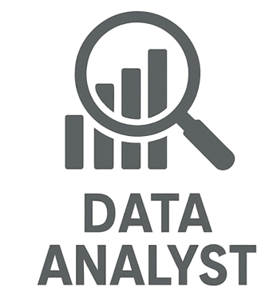
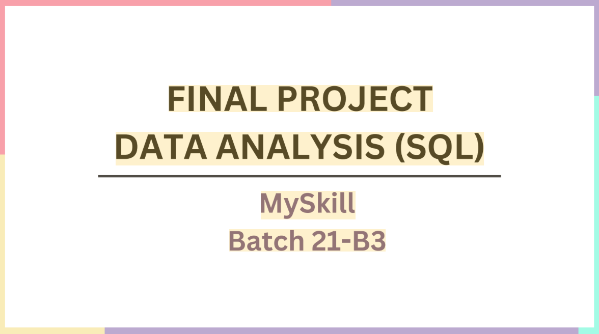
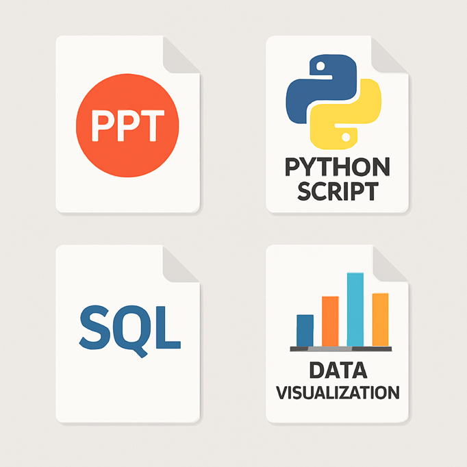
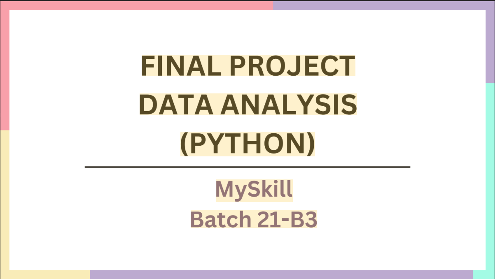

Available for Opportunities & Projects
Hi, Welcome to my portfolio 👋
I'm Muhammad Arsyi
Sulthoni Asroruddin
Alumni of Binus University • IT Programmer & Data Analyst
Passionate Computer Science graduate dedicated to transforming complex data into actionable insights, building functional web applications, and crafting clear, structured technical documentation.
Data Analytics
SQL, Python & Dashboards
IT Programmer
Web & Mobile Solutions
Portfolio Showcase
My Featured Projects
Explore my completed and ongoing projects across Data Analytics, Web Development, Technical Writing, and Audio Production.
Data Analytics

Data Analyst Project Collection
Curated case studies from MySkill bootcamp and channel analytics covering SQL queries, data wrangling, and interactive dashboards.
Database

SQL Query & Data Preparation
Structured database queries, complex table joins, dataset normalization, and analytical SQL scripts for business reporting.
Business Intelligence

Analytics Performance Dashboard
Interactive visualization dashboard transforming raw dataset metrics into clear visual KPI summaries and performance trends.
Technical Writing
Technical Writer Documentation
Official progress reports, system manuals, and user guides for government applications (Kementerian ATR/BPN RDTR Online GISTARU).
WordPress CMS
WordPress Website Development
Production websites for educational institutions (SDIT Citra Sahabat) and local businesses with responsive design and SEO setup.
Frontend & Web

Landing Pages & Web Frameworks
High-converting responsive landing pages and modern web interfaces built using HTML, CSS, JavaScript, and modern frameworks.
Python Automation

Python Scripting & Analytics
Automated data processing scripts, YouTube channel performance extraction, and statistical calculation pipelines.
Audio & Music
Electronic Music Production
Creative music compositions, sound design, and electronic audio tracks composed and released on SoundCloud.
Web Application
Tony Finance Application
Web-based financial management tool and dashboard deployed on Vercel for tracking budget, cash flow, and analytics.
Experience
My Working History
Professional roles and internships focused on software architecture, programming, and technical documentation.
Engaged in designing geospatial software solutions, mobile application development, and client workflow architecture. Collaborated with teams to deliver robust spatial solutions.
Authored official progress reports, user manuals, and technical specifications for ministry web applications (e.g., Kementerian ATR/BPN). Provided programmer support for software modules.
Competencies
My Skills & Expertise
Technical stack, analytical tools, productivity suites, and professional capabilities.
Data & Databases
SQL (PostgreSQL / MySQL)
Advanced
Python Programming
Proficient
Data Visualization & KPI
Skilled
Data Cleaning & ETL
Skilled
Web & Software
HTML5 & CSS3
Advanced
JavaScript (ES6+)
Proficient
WordPress CMS
Advanced
IT Solution Architecture
Skilled
Office & Media
Microsoft Excel
Formulas & Pivot
Microsoft Word
Documentation
PowerPoint Decks
Presentation
Music Production
Creative
Languages & Soft Skills
English Proficiency
TOEFL : 497
Technical Writing
Professional
Teamwork & Collaboration
Core
Video Editing
Multimedia
Perspective
Personal Vision & Philosophy
A dedication to growth, continuous learning, and positive technological impact.